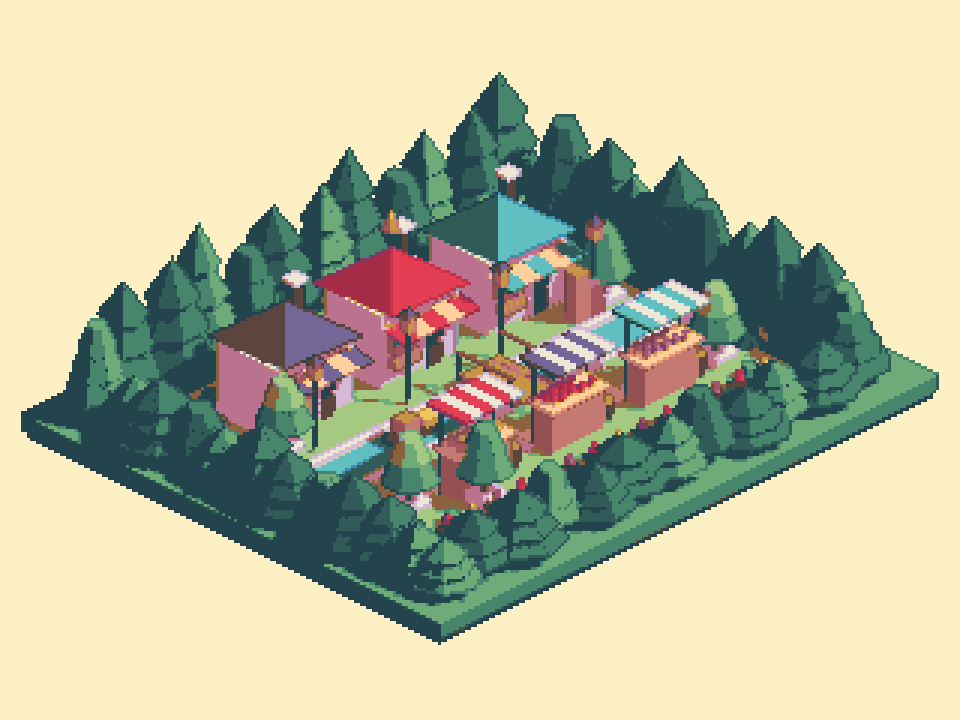

Tracefolio REPORTS & ISSUES
Tracefolio REPORTS & ISSUES시장·숲 외곽선 — 각 경계 표면색과 다색텍스처를 따르도록 수정
검증 대기기존 표면색 기반 옵션을 시장 프리셋에 켜고, 내부 하이라이트 혼합 전의 현재 표면색을 외곽선 계산에 사용했습니다. 하나의 텍스처가 여러 색이면 경계 위치에 따라 선색도 달라집니다.
작업 결과
수정과 실제 Unity 렌더 검증을 완료했습니다. 공통갈색을 제거하고 나무·지붕·차양의 표면색을 따르게 했습니다.
변경 내용
적용 내용
변경은 기존옵션 켬(objectColorOutline=true)과 경계 표면색 샘플 고정입니다. 선색계산은 현재표면 RGB×0.6이며 배경이나 밝은 이웃면의 색으로 대체하지 않습니다. 법선은 경계 검출에만 사용합니다.


검증
- 실제 Unity6000.0.83f1 Built-in 시장렌더·저장재열기 출력동일. 팔레트밖0개,3×3격자불일치0개,32출력색 유지.
- 하나의빨강/초록 텍스처를쓴실제Quad의양끝선은RGB(203,0,0)/(0,203,0). 같은물체에서도텍스처위치의색을따름. 실제텍스처검사 · 렌더검사
- 기존카메라·배치·450메시오브젝트·예제진입은 유지. 문서9언어와현재실제이미지 갱신.
- 원래활성씬·더티·선택·preview수보존. 새GUI실행/입력없음.
- 기존표면색검증원칙을적용했으며 새전역지침추가없음.
남은 사항
실제네이티브입력·EditorUI언어레이아웃·URP렌더는미검증이며화면조작보류유지. 법선 기반 경계검출의 기존한계는유지합니다.
작업 시간
- 제안 시간: 3~5분
- 실제로 완료된 시간: 시작 2026-11-06 00:27:23 KST. 수정·렌더/다색텍스처 검증 종료 2026-11-06 00:34:55 KST. 최초3~5분 예상은 초과했습니다. 공개확인은 이후 수행합니다.
- XERJ: 미사용 — Status에서노드미실행확인. 현재소스직접읽기와rg사용.